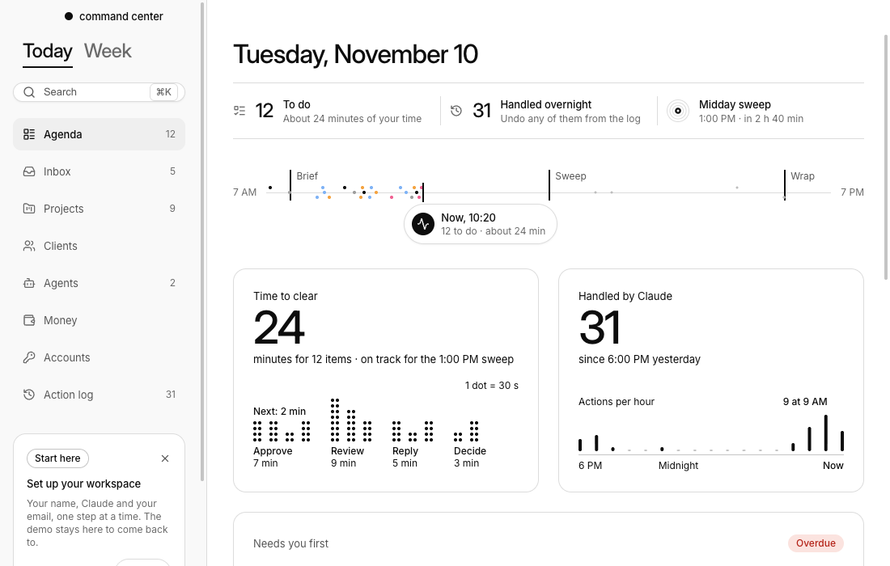
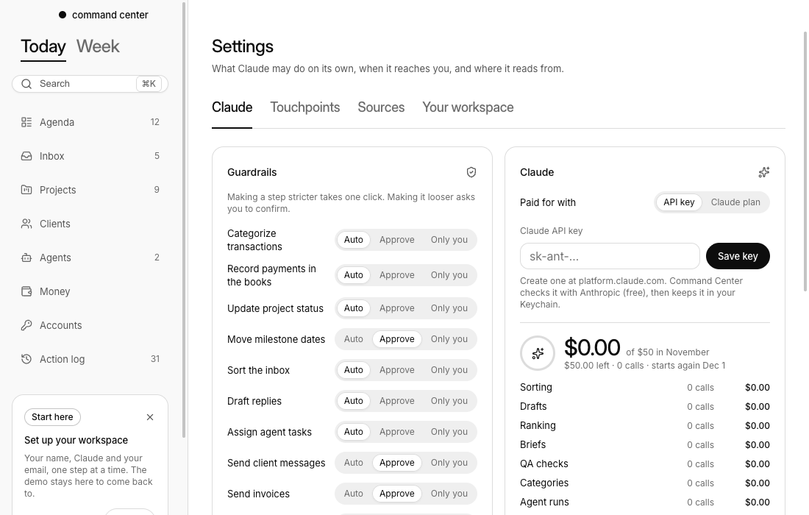

Your business admin, handled. Only what needs you reaches you.
Command Center is a desktop app for Mac and Windows. Claude works through your mail, projects, clients, site agents and money, and three times a day you get only what needs you: things to approve, review, reply to or decide.
Free. Version 0.2.2. Your data stays on your computer.

Three times a day, then out of your way
Claude keeps working between touchpoints. At each one you get a short brief and a short list. Close the window and Command Center keeps running in the menu bar or the notification area.
Morning brief
What came in overnight, what Claude handled, and what needs you first.
Midday sweep
What's new since the morning, and what's due before the end of the day.
End-of-day wrap
What got done, what's waiting on others, and what tomorrow starts with.
Plus a plan for the week on Monday mornings and a review on Friday afternoons. Every time is yours to move.
Four kinds of things reach you
Everything else is handled, filed, or waiting on someone else. Each item says why it's there and when it's due, with Claude's recommendation.
- Approve: a reply, invoice or action Claude prepared. It runs only on your click.
- Review: work a site agent finished and QA checked.
- Reply: a message only you can answer, often with Claude's draft in your voice.
- Decide: a slipping milestone, a bill, a flagged charge, a card running out.

Everything your business runs on, in one place
Connect only what you use. Each source uses an app you make yourself, for free, so no one else's app holds your data.
Inbox
Gmail and Slack, sorted for free by rules first, then by Claude. Replies drafted in your voice, sent only when you approve.
The inboxProjects and clients
Milestones, contracts and contacts. Health and slipping dates are worked out for you, and a slip reaches Decide.
Projects and clientsSite agents
Hand an agent a change to one of your websites. It works on a copy, QA checks it, and nothing merges until you accept it.
Site agentsMoney
QuickBooks and Stripe read in, invoices drafted from milestones, a Friday reconcile, and flags for odd charges.
Money and the booksAccounts and cards
Every client login, card on file and renewal, without ever keeping a password or a full card number.
Accounts and cardsAlerts and audio
What can't wait reaches your phone through ntfy. The morning brief can be read aloud by your computer's own voice.
Touchpoints and alertsBring in Notion
Import your clients, projects and milestones from Notion, read only, then retire it when nothing's left there.
Bringing in NotionBackups
Your workspace sealed with your passphrase every night, in a folder you choose, and restored on a new computer.
BackupsClaude, your way
Pay with your own API key or your Claude plan, under a monthly cap you set. Command Center itself is free.
Claude and costs
Nothing speaks for you on its own
Claude never gets a tool that sends, pays or signs. It prepares; Command Center acts, and only within the rules you set.
- For each kind of work, choose Auto, Approve or Only you. Anything that sends, publishes or speaks for you is always at least Approve.
- Moving money, card details, contracts and pricing stay yours, always.
- Every change lands in the action log, with Undo where it can have one.
- A message that tries to tell Claude what to do changes nothing: mail is data, never instructions.
Your data stays on your computer
Command Center is local-first. It opens and shows everything offline; only the features you switch on reach out, and only for what they need.
On your disk
One database per workspace, in your own user folder.
In your keychain
Keys and sign-ins live only in the system's keychain, never in files or logs.
Read, not obeyed
Emails, pages and files are data. Nothing in them picks a recipient or an action.
No tracking
No account, no analytics. Updates are a once-a-day check you can turn off.
Set up in an evening, then let it run
The first launch walks you through it one step at a time: your workspace, Claude, email and Slack, sorting, your books, Notion, your sites and backups. Skip anything and come back later, or look around the demo first.